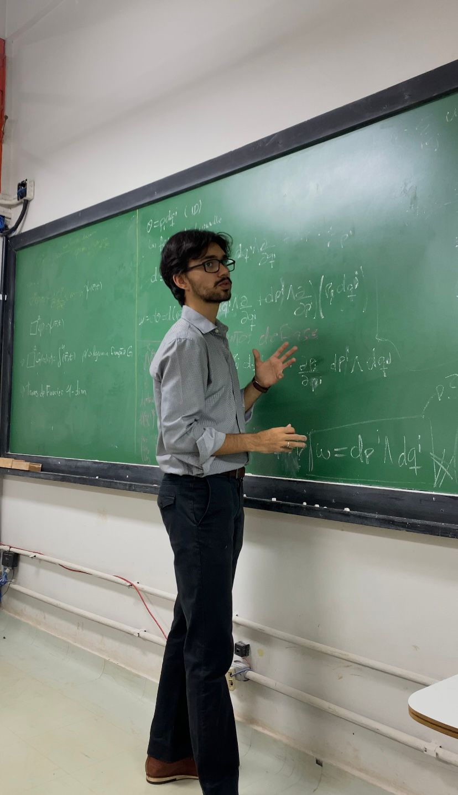

Rennan Santos
Graduando em Física e pesquisador em formação. Atualmente desenvolvo pesquisa em cosmologia, com interesse especial por gravitação, geometria diferencial e os fundamentos geométricos do universo.
Trajetória Acadêmica
Iniciação Científica em Cosmologia
Bolsista CNPq. Estudo de aspectos geométricos da cosmologia relativística e geodésicas em espaços-tempos FLRW. Orientação do Prof. Sandro Vitenti.
Iniciação Científica em Física Nuclear Aplicada
Determinação de macro e micronutrientes em forragens utilizando espectrometria WDXRF. Orientação do Prof. Fábio Melquiades.
Monitoria Acadêmica
Monitor de Física III e de Cálculo e Geometria Analítica I para turmas de graduação.
Bacharelado em Física — UEL
Formação em Física com atuação em grupos de estudo, extensão e atividades acadêmicas.
O que procuro explorar
Perguntas que me acompanham
Caderno de Pesquisa
Spacetime and Geometry
Geodésicas em FLRW
Formas Diferenciais
Uma Equação
A matéria diz ao espaço-tempo como curvar-se;
o espaço-tempo diz à matéria como mover-se.
Tenho interesse especial pelas estruturas geométricas da física, particularmente em contextos cosmológicos e gravitacionais. Busco compreender como conceitos matemáticos abstratos se conectam à descrição física do universo e às questões fundamentais sobre espaço, tempo e causalidade.